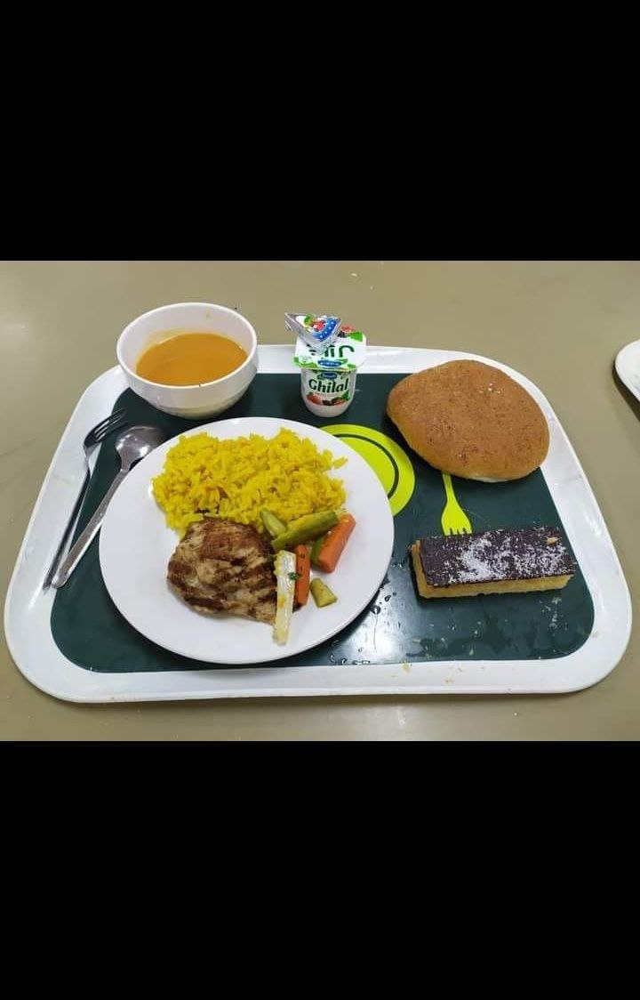
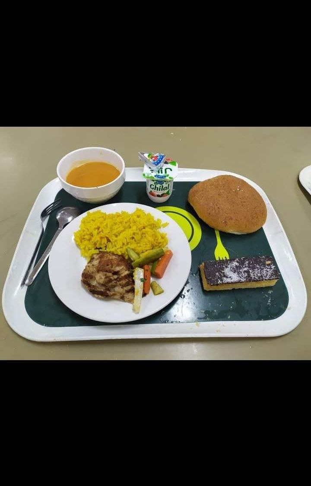

Filieres :
La filière Data and Software Engineering de l'INSEA forme des ingénieurs polyvalents, prêts pour les défis de l'ingénierie des données et du développement logiciel.
Elle offre une formation complète couvrant les bases de l'ingénierie informatique, l'ingénierie des données et le génie logiciel, ainsi que des compétences en mathématiques et communication.
Les étudiants acquièrent une expertise dans les technologies Big Data, les méthodes d'apprentissage automatique et les architectures logicielles avancées, tout en adoptant des pratiques agiles et en garantissant la qualité des logiciels.
Les diplômés de la formation ont accès à divers débouchés professionnels, tels que:
- Architecte des SI
- Développeur full stack
- Ingénieur qualité
- Ingénieur DevOps
- Concepteur des systèmes décisionnels
- Chef de projet en développement informatique
- Administrateur des systèmes de bases de données
- Consultant en business intelligence
- Développeur mobile
- Ingénieur Big Data
- Ingénieur en intelligence artificielle
- Consultant en machine & deep learning
-
- ALGORITHMIQUE ET PROGRAMMATION
- ARCHITECTURE DES ORDINATEURS
- ANALYSE ET CONCEPTION RELATIONNELLES & BASES DE DONNÉES
- ANALYSE DE DONNÉES ET PROGRAMMATION AVEC SAS
- PROBABILITÉS ET INFÉRENCE STATISTIQUE
- PROGRAMMATION LINÉAIRE ET ANALYSE NUMÉRIQUE
- PRINCIPES DE L'ÉCONOMIE ET HISTOIRE DE LA PENSÉE ÉCONOMIQUE
- SCIENCES SOCIALES, COMMUNICATION AND BUSINESS ENGLISH 1
-
- STRUCTURES DE DONNÉES ET PROGRAMMATION AVANCÉE
- PROGRAMMATION ORIENTÉE OBJET
- DÉVELOPPEMENT WEB
- SYSTÈMES D'EXPLOITATION
- RÉGRESSION LINÉAIRE ET SÉRIES CHRONOLOGIQUES
- ANALYSE ÉCONOMIQUE ET COMPTABILITÉ NATIONALE
- ENTREPRENARIAT
- SCIENCES SOCIALES, COMMUNICATION AND BUSINESS ENGLISH 2
-
- MODÉLISATION ORIENTÉE OBJET DES SI
- RÉSEAUX INFORMATIQUES
- PROGRAMMATION ORIENTÉE OBJET AVANCÉE
- COMPILATION ET INFORMATIQUE THÉORIQUE
- BASES DE DONNÉES AVANCÉES
- THÉORIE DES GRAPHES ET MODÈLES DISCRETS
- ENTREPRENARIAT II
- SCIENCES SOCIALES, COMMUNICATION AND BUSINESS ENGLISH 3
-
- BUSINESS INTELLIGENCE & KNOWLEDGE DISCOVERY
- IOT & CLOUD COMPUTING
- GÉNIE LOGICIEL ET PROJET
- ARCHITECTURE TCP/IP ET ADMINISTRATION
- INTELLIGENCE ARTIFICIELLE
- NOUVELLES TECHNOLOGIES DE DÉVELOPPEMENT
- ENTREPRENEURIAT III
- SCIENCES SOCIALES, COMMUNICATION AND BUSINESS ENGLISH 4
-
- SÉCURITÉ INFORMATIQUE
- USINE LOGICIELLE
- BPM & MICROSERVICES
- ARCHITECTURES DES SI
- BIG DATA
- MACHINE & DEEP LEARNING
- PROJET D'OUVERTURE ET D'INNOVATION
-
- PROJET DE FIN D'ETUDE (PFE)
La formation Data Science de l'INSEA forme des experts polyvalents en analyse de données massives.
Les étudiants apprennent à combiner les compétences du Data Analyst et du Data Engineer pour générer des prédictions précises. En plus des compétences techniques, la formation renforce les soft skills.
Les étudiants acquièrent une expertise dans les technologies Big Data, les méthodes d'apprentissage automatique et les architectures logicielles avancées, tout en adoptant des pratiques agiles et en garantissant la qualité des logiciels.
Les diplômés de la filière ont divers débouchés professionnels, notamment comme:
- Consultant en Data Science
- Consultant Data Analyst
- Consultant Business Analytics
- Consultant Data Architect
- Consultant Machine Learning et Deep Learning
- Consultant en Ingénierie de données
- Ingénieur Big Data
- Concepteur des Systèmes d'information Décisionnels
- Consultant en modélisation des systèmes complexes
-
- ALGORITHMIQUE ET PROGRAMMATION
- ARCHITECTURE DES ORDINATEURS ET SYSTÈMES D'EXPLOITATION
- ANALYSE ET CONCEPTION RELATIONNELLES & BASES DE DONNÉES
- ANALYSE DE DONNÉES ET PROGRAMMATION AVEC SAS
- PROBABILITÉS ET INFÉRENCE STATISTIQUE
- PROGRAMMATION LINÉAIRE & MATHÉMATIQUES POUR DATA SCIENCE
- PRINCIPES DE L'ÉCONOMIE ET HISTOIRE DE LA PENSÉE ÉCONOMIQUE
- SCIENCES SOCIALES, COMMUNICATION AND BUSINESS ENGLISH 1
-
- STRUCTURES DE DONNÉES ET PROGRAMMATION AVANCÉE
- PROGRAMMATION ORIENTÉE OBJET
- RÉGRESSION LINÉAIRE ET SÉRIES CHRONOLOGIQUES
- CALCUL SCIENTIFIQUE POUR DATA SCIENCE
- PROCESSUS STOCHASTIQUES & FILES D'ATTENTE
- PRINCIPES DE L'ÉCONOMIE II ET COMPTABILITÉ NATIONALE
- ENTREPRENARIAT
- SCIENCES SOCIALES, COMMUNICATION AND BUSINESS ENGLISH 2
-
- DATA VIZ LANGUAGE & MULTIMEDIA INFORMATION SYSTEMS
- MODÉLISATION ORIENTÉE OBJET DES SI
- DATA ARCHITECTURES & SECURITY BLOCKCHAINS
- STATISTIQUES MULTIVARIÉES ET SÉRIES CHRONOLOGIQUES AVANCÉES
- APPRENTISSAGE STATISTIQUE SUPERVISÉ ET NON SUPERVISÉ
- THÉORIE DES GRAPHES ET MODÈLES DISCRETS
- ENTREPRENARIAT II
- SCIENCES SOCIALES, COMMUNICATION AND BUSINESS ENGLISH 3
-
- BUSINESS INTELLIGENCE & KNOWLEDGE DISCOVERY
- SOFTWARE ENGINEERING, AGILE & DATAOPS
- INTELLIGENCE ARTIFICIELLE
- RÉGRESSION SUR VARIABLES CATÉGORIELLES ET MODÈLES GLM
- SIMULATION I & PROGRAMMATION NON LINÉAIRE
- PROJET ENCADRÉ
- ENTREPRENEURIAT III
- SCIENCES SOCIALES, COMMUNICATION AND BUSINESS ENGLISH 4
-
- BIG DATA
- MACHINE AND DEEP LEARNING
- ECHANTILLONNAGE ET TRAITEMENT DES VALEURS MANQUANTES
- STATISTIQUE POUR LE BIG DATA
- APPRENTISSAGE PAR MARKOV CACHÉS ET FILTRAGE
- MÉTAHEURISTIQUES & OPTIMISATION STOCHASTIQUE & MÉTHODES DE DÉCOMPOSITION
- SÉMINAIRES D'OUVERTURE
-
- PROJET DE FIN D'ETUDE (PFE)
DD & Echange :
| Filières (Selon Historique et moyenne générale de séléction; ce n'est pas fixé) |
Processus d'échange/double diplomation |
Row 3 | ENSAE/ENSAI | 1 DS | 1ère étape: Pré-sélection par INSEA (14 étudiants présélectionnés) Elle
se fait selon la pondération suivante : (S1+2S2+3S3)/6 puis un
classement entre les filières , il n'y a pas un nombre précis pour chaque
filière. Les moyennes sont calculées AVANT RATTRAPAGE !
PS: les 3 filières sont confondues « mélangées », après ils font un classement (le classement ne se fait pas au sein de chaque filière indépendamment, mais entre les 3) 2ème étape: Étude du dossier, par les deux écoles ENSAE ENSAI, qui comporte: ⮚ CV ⮚ Lettre de motivation (faut indiquer la ou les écoles souhaitées, l'ordre de préférence ainsi que votre projet professionnel) ⮚ Bulletins depuis le baccalauréat Après 2 jours seulement de votre soumission de dossier, vous recevez une réponse si vous êtes admissible 3ème étape: Entretien après admissibilité: ( 8 étudiants admissibles) Entretien, durée 20 min: 10 min pour vous présenter et 10 min où vous allez répondre aux questions (qui diffèrent d'un candidat à un autre, cela dépend de votre motivation et votre projet professionnel, de vos notes etc...) PS: une partie de l'entretien est en anglais puisque certains cours à l'ENSAE-ENSAI sont dispensés en anglais ! 4ème étape: Admission (5 admis: 2 ENSAE; 3 ENSAI) |
|---|---|---|---|
| Row 3 |
ULAVAL
Faculté des Sciences et Génie |
2DS et 2 DSE : programme Informatique | Remplissage d'un formulaire + sélection par l'INSEA :
Elle se fait selon la pondération suivante : (S1+2S2+3S3)/6 puis un classement dans chaque filière indépendamment! Les moyennes sont calculées AVANT RATTRAPAGE ! Pas d'entretien, une fois admissible c'est-à-dire sélectionné par l'INSEA , il suffit de remplir un formulaire (détails dans l'email que vous recevrez) et obtenir la lettre d'admission afin d'entamer la procédure d'immigration. |
Comités :
Comité Culturel:
Ils organisent des manifestations culturelles et des conférences pour enrichir la vie étudiante et promouvoir la diversité culturelle au sein de l'institut.
Insea Junior Entreprise:
Ils sont responsables de l'organisation de tournois sportifs variés, offrant l'occasion de se divertir et de se surpasser sur le terrain, que ce soit au basket-ball, au football, ou même au baby-foot.
Comité Internat:
L'objectif est d'assurer un suivi attentif de la vie au sein de l'institut, en mettant l'accent sur la résidence étudiante et le réfectoire, pour garantir le bien-être de tous.
Club Sportif INSEA:
L'objectif est d'assurer un suivi attentif de la vie au sein de l'institut, en mettant l'accent sur la résidence étudiante et le réfectoire, pour garantir le bien-être de tous.
INSEA Innovation Edge:
2IE is a computer science oriented club which resides in the institute of INSEA in morocco, the main objective of this club since its creation in 2018 is to prepare students from INSEA to win local / national as well as international hackathons & competitive coding competitions. the club also strives to build an image for itself by releasing new initiatives each year, and we hope to host our own hackathons in the near future.
INSEA IT:
Le club se veut par excellence etre un espace d'apprentissage d'échange et de partage dans les domaines les plus divers de l'informatique. Il est ainsi l'un des clubs les plus préstigieux de l'Institut National de Statistique et d'Economie Appliquée, INSEA IT est composé de membres compétents, qualifiés et dévoués pour offrir un cadre approprié pour mieux appréhender les divers champs Informatiques.
Insea Charity:
Sous la devise "Be Helpful..Be Human", Insea Charity(CIC) est un club à but non lucratif, fondé par un groupes des élèves ingénieurs. Un club où se mêlent altruisme,générosité et esprit d'équipe ainsi que toute sorte de bénévolat et de charité.
Compus:
L'Institut dispose d'un internat offrant près de 500 chambres individuelles pour ses étudiants, et depuis octobre 1994, l'INSEA possède un restaurant capable d'accueillir environ 600 personnes, servant en moyenne 1 200 repas par jour, incluant le petit déjeuner, le déjeuner et le dîner. De plus, la bibliothèque de l'INSEA, ouverte en accès libre depuis 2013, permet aux usagers de parcourir les documents sur les rayonnages et de travailler dans un environnement à la fois calme et dynamique:
 

Comments